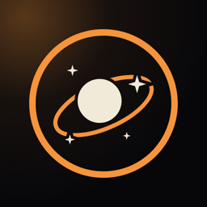

ORBITA Marble
A one-tap journey to the stars · SupportHow to play
Your marble orbits a planet on one of two rings. Tap anywhere to switch rings and dodge the glass blocks. Clear the orbits of a world to travel to the next: the 10 worlds of the Solar System, then 100 real exoplanets, each with its own challenge.
Questions and problems
Something not working, or an idea for the game? Write to us here (a free GitHub account is needed). Tell us your device and what happened.
Your progress is saved on your device. Deleting the app deletes it.
Privacy
Read the privacy policy.
Em português
Sua bolinha orbita um planeta em um de dois anéis. Toque em qualquer lugar para trocar de anel e desviar dos blocos de vidro. Vença as órbitas de um mundo para viajar ao próximo: os 10 mundos do Sistema Solar e depois 100 exoplanetas reais, cada um com seu desafio.
Dúvidas ou problemas? Escreva para nós aqui. Leia também a política de privacidade (em inglês).